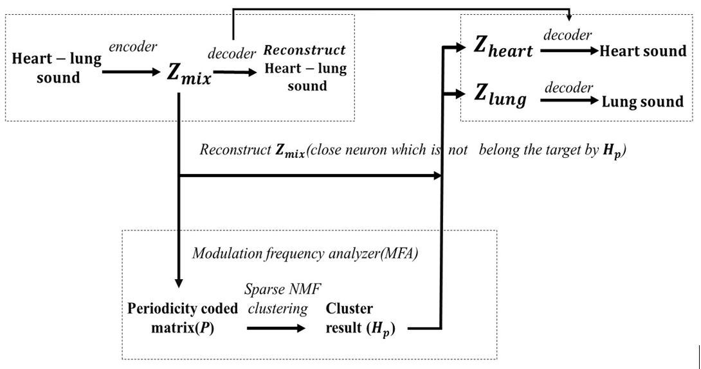

Blind Monaural Source Separation on Heart and Lung Sounds Based on Periodic-Coded Deep Autoencoder
Paper: TBE
Authors: Kun-Hsi Tsai, Wei-Chien Wang, Chui-Hsuan Cheng, Chan-Yen Tsai, Jou-Kou Wang, Tzu-Hao Lin, Shih-Hau Fang, Li-Chin Chen, Yu Tsao
Abstract: Auscultation is the most efficient way to diagnose cardiovascular and respiratory diseases. To reach accurate diagnoses, a device must be able to recognize heart and lung sounds from various clini-cal situations. However, the recorded chest sounds are mixed by heart and lung sounds. Thus, effectively separating these two sounds is critical in pre-processing stage. Recent advances in machine learning have progressed on monaural source separations, but most of the well-known techniques require paired mixed sounds and indi-vidual pure sounds for model training. As to the preparation of pure heart and lung sounds is extremely difficult, special designs must be considered to derive effective heart and lung sound separation tech-niques. In this study, we proposed a novel periodicity-coded deep auto-encoder (PC-DAE) approach to separate mixed heart-lung sounds in an unsupervised manner via the assumption of different periodicities between heart rate and respiration rate. The PC-DAE benefits from deep-learning-based models by extracting representa-tive features and considers the periodicity of heart and lung sounds to carry out the separation. We evaluated PC-DAE on two datasets. The first one includes sounds from the Student Auscultation Mani-kin (SAM), and the second is prepared by recording chest sounds in real-world conditions. Experimental results indicate that PC-DAE outperforms several well-known separation works in terms of standardized evaluation metrics. Moreover, waveforms and spec-trograms demonstrate the effectiveness of PC-DAE compared to existing approaches. It is also confirmed that by using the proposed PC-DAE as a pre-processing stage, the heart sound recognition ac-curacies can be notably boosted. The experimental results con-firmed the effectiveness of PC-DAE and its potential to be used in clinical applications.
Random audio samples from Student Auscultation Manikin (SAM) testing set
The convolutional deep autoencoder (DAE(C)) architecture.
Flowchart:

Modulation frequency analysis method comparision(Wavelets, DFT)
| Supplement Table 1 | Supplement Table 2 |
|---|---|
 |
 |
Meaning of the columns in the table below:
- The mix heart-lung sound input to the PC-DAE(C). It's generated by summing the heart sound with lung sound in direct SNR.
- The clean audio, which is the ground truth.
- The separated results(heart, lung sound) from the PC-DAE(C) with Wavelets MFA and PC-DAE(C) with DFT MFA.
| Case 1:Mix heart-lung sound(SNR=-6dB) | clean heart sound | clean lung sound | |
|---|---|---|---|
| Separated heart sound(PC(Wavelets)) | Separated lung sound(PC(Wavelets)) | Separated heart sound(PC(DFT)) | Separated lung sound(PC(DFT)) |
| Case 2:Mix heart-lung sound(SNR=-6dB) | clean heart sound | clean lung sound | |
| Separated heart sound(PC(Wavelets)) | Separated lung sound(PC(Wavelets)) | Separated heart sound(PC(DFT)) | Separated lung sound(PC(DFT)) |
| Case 3:Mix heart-lung sound(SNR=-6dB) | clean heart sound | clean lung sound | |
| Separated heart sound(PC(Wavelets)) | Separated lung sound(PC(Wavelets)) | Separated heart sound(PC(DFT)) | Separated lung sound(PC(DFT)) |
FAQ
Can you share your code?
TBE
Dataset information
Cardionics. "SAM® 3G — Student Auscultation Manikin." https://www.cardionics.com/product/learning-systems/sam-3g-student-auscultation-manikin-3rd-generation.